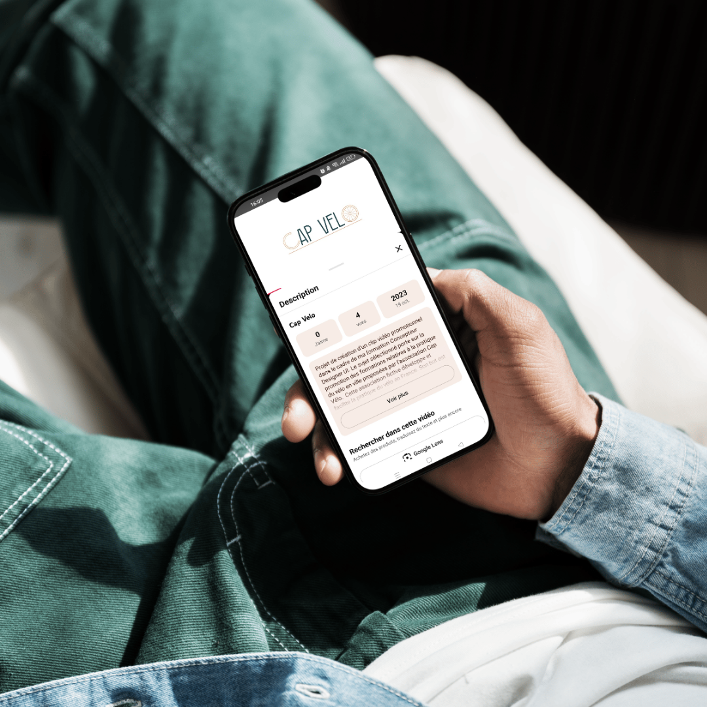
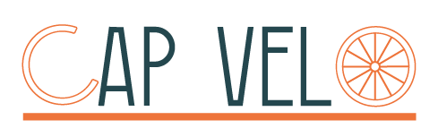
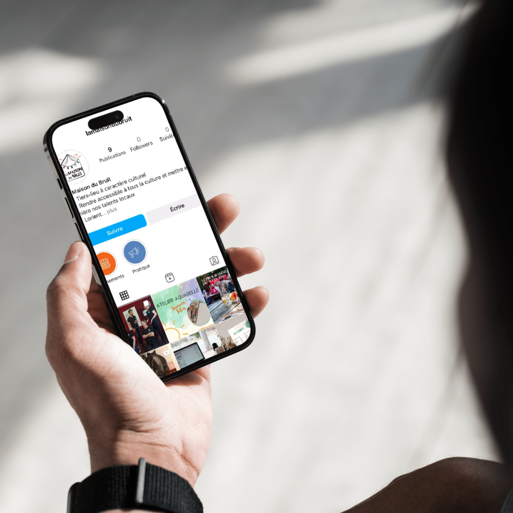

Cap Vélo
Dans le cadre de ma formation de Concepteur Designer UI au GRETA, j’ai réalisé un projet audiovisuel autour d’un thème imposé : le vélo. À partir de ce thème, j’ai imaginé Cap Vélo, une association fictive proposant un accompagnement à la pratique du vélo en ville. L’objectif était de concevoir une vidéo promotionnelle de A à Z, capable de présenter le service tout en mettant en avant les bénéfices du vélo comme alternative aux déplacements quotidiens en voiture.
Type
Vidéo promotionnelle • Motion design
Rôle
Conception • Tournage • Montage
Outils utilisés
Premiere Pro • After Effects • Illustrator • Animate

La conception
De l’idée au scénario
J’ai commencé par définir le message et construire le scénario de la vidéo autour d’une situation du quotidien : les difficultés liées aux déplacements en voiture et la recherche d’une alternative plus agréable et écologique.
J’ai ensuite traduit le scénario en storyboard, afin de préparer les différentes scènes, anticiper les prises de vue et construire le rythme de la vidéo avant le tournage.
Le tournage
Du storyboard à l’image
Une fois le scénario défini, j’ai réalisé les différentes prises de vue nécessaires à la vidéo en suivant le découpage imaginé lors de la phase de storyboard.
Les séquences ont ensuite été sélectionnées et assemblées dans Adobe Premiere Pro afin de construire le rythme et la narration du film.
Identité visuelle et animation
Une identité créée pour le projet
Cap Vélo étant un projet fictif, j’ai également conçu son logo sur Adobe Illustrator afin de donner une identité visuelle cohérente à la vidéo.
J’ai ensuite intégré cette identité au montage et réalisé différentes animations graphiques : les séquences d’introduction et l’animation du logo avec Adobe Animate, ainsi que les animations typographiques avec After Effects.

Son et voix off
Donner du rythme par le son
Le travail sonore a également participé à la construction de l’ambiance et du message de la vidéo.
J’ai enregistré la voix off, puis recherché et sélectionné une musique libre de droits adaptée au rythme du projet. J’ai également intégré différents effets sonores, notamment les bruits d’embouteillages de l’introduction, afin de renforcer le contraste avec les séquences consacrées au vélo.
L’ensemble des pistes audio — voix, musique et effets sonores — a ensuite été assemblé et ajusté dans Adobe Premiere Pro pour accompagner la narration et les images.
Le résultat

Projet suivant
La Maison du Bruit
Dans le cadre de ma formation de Concepteur Designer UI au GRETA, j’ai imaginé une stratégie de communication sur les réseaux sociaux pour La Maison du Bruit, un tiers-lieu culturel fictif situé dans le pays de Lorient. Le lieu réunit plusieurs activités : spectacles vivants, espace dédié aux créateurs, coworking et guinguette. Son ambition est de rendre la culture accessible à différents publics et de créer un espace de rencontre autour de l’art et de la création.